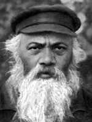

Chassid and Tzaddik
New profile of a Chassid whose yahrtzait falls out that week. It is most appropriate to begin with the mashpia, R’ Zalman Moshe HaYitzchaki, the only one about whom the Rebbe wrote “zatzal” (zecher tzaddik livracha). He passed away on 3 Shvat 5712/1952.
BIOGRAPHICAL SKETCH

He married Neshe Reines in Zembin in 5658. She was from a well-known Misnagdic family. He lived in Zembin and worked as a shochet. Upon the announcement of the founding of Yeshivas Tomchei T’mimim in Lubavitch, the first group of talmidim traveled together with the mashpia, R’ Shmuel Grunem Esterman to learn in Zembin. R’ Grunem was the first one from whom R’ Zalman Moshe heard shiurim in Chassidus and it greatly appealed to him. In Tishrei 5659 he joined the bachurim traveling to Lubavitch where he became a Lubavitcher Chassid.
After several years he left Zembin and moved to Szedrin where he became the shochet. When people wondered why he bothered moving, he said that in little Szedrin he would be less occupied with sh’chita and could learn more Chassidus. During World War I the situation at home was desperate, to the point of starvation, and his wife had to open a small store to support her family. She hid the money she earned because R’ Zalman Moshe would give it to someone who was more hungry.
After his father passed away, R’ Zalman Moshe moved to Nevel and became the shochet there. As soon as he arrived there, he became one of the central figures in the large Lubavitch community. In addition to farbrengens, of which there were many in his home, his house was open to all in need. At farbrengens he would speak very sharply and chastise the people very harshly.
R’ Zalman Moshe went to Eretz Yisroel in 5695/1935 with his wife, his son Shmuel, and his daughter Pia. He lived on Rechov Yavniel in Tel Aviv, next to the Carmel market. Immediately upon his arrival in Eretz Yisroel, the Rebbe Rayatz’s secretary, R’ Chatshe Feigin, sent a letter to Anash in Tel Aviv in the name of the Rebbe, in which he described R’ Zalman Moshe and asked them to take care of his parnasa:
“… He is from amongst the unique individuals as relates to diligence of study and grasp of Chassidus and is proficient in many drushim of my father. You need to see to it that he gets a position as a shochet and be mekarev him greatly.”
He was accepted as a member of the organization of shochtim in Tel Aviv and worked as a shochet at Shuk Betzalel. He immediately joined the Chabad community and took a place of honor among those who farbrenged in the Chabad shul. He was the main speaker at all farbrengens.
YOU NEED TO LEARN THE REBBE’S CHASSIDUS
When R’ Zalman Moshe first went to the Rebbe Rashab in Tishrei 5659, he listened to maamarei Chassidus and discovered that they were slightly different than the Chassidus he learned with R’ Grunem. R’ Grunem taught only the Rebbe Maharash’s maamarim, for he was mekushar to him. R’ Zalman Moshe found out that R’ Grunem did not refer to the Rebbe Rashab as the Rebbe. When the T’mimim returned to Zembin, R’ Zalman Moshe stopped attending R’ Grunem’s shiurim saying, “We need to learn the Rebbe’s Chassidus.”
When R’ Zalman Moshe returned to Lubavitch for the following Rosh HaShana, the Rebbe asked him in yechidus whether he was still listening to R’ Grunem’s shiurim. When he said no, the Rebbe asked him why. “Because he does not teach your Chassidus,” said R’ Zalman Moshe. “If so, it doesn’t matter,” said the Rebbe, making a dismissive motion with his hand.
Later on, the Rebbe Rashab referred to him as “My Zalman Moshe.” Indeed, R’ Zalman Moshe was absolutely devoted to the Rebbe Rashab to the point that, after his passing, he continued learning only his maamarim.
THE MAIN POINT OF SHOFAR BLOWING
R’ Mendel Futerfas related:
One year, when I spent Rosh HaShana with the Rebbe Rayatz in Leningrad, I saw R’ Zalman Moshe before the shofar blowing having a lively conversation with his son-in-law R’ Avrohom Maiyor (Drizin). I was curious to know what they were talking about and I went over to them. I heard R’ Avrohom speak in wonder about the lofty significance of the shofar blowing, saying that this brings down a new light that never existed since Creation.
“That’s all fine and good,” said R’ Zalman Moshe, “but that is not the main reason that this time is so special. It is special because this is an auspicious time for us to do t’shuva for thought, speech, and action.”
CHAG HA’GEULA – GIMMEL TAMMUZ
On 3 Tammuz, when news of the Rebbe Rayatz’s release from jail reached Nevel, the Chassidim first thought that the release was complete. Therefore, they gathered in the shul and danced nonstop and said l’chaim, with the mashke pouring like water. Many of the Chassidim rolled on the ground and did somersaults. Due to the pounding of the dancing, the wooden floor began to shake and the Aron Kodesh nearly fell. Some of the men held on to the Aron Kodesh so that their friends could continue dancing.
Leading the celebrants was R’ Zalman Moshe who did not stop singing, saying l’chaim, and rolling around while singing, “Ashreinu Ma Tov Chelkeinu.” Towards morning, when they took him from the shul as he was still singing the same niggun, he made a somersault in the mud.
Later on, they heard that the Rebbe was not entirely free but was sent to exile. The Chassidim were despondent; all except for R’ Zalman Moshe who continued to sing, to rejoice, and say l’chaim. “The Rebbe was released and we ought to rejoice!” Just a week and a half later, on 12 Tammuz, the rest of the Chassidim joined in the simcha.
R’ ITCHE THE CHASSID AND R’ ITCHE THE SHLIACH ARE TWO DIFFERENT PEOPLE!
One of the Chassidim who, on more than one occasion, got a taste of R’ Zalman Moshe’s sharp tongue was R’ Itche der Masmid. R’ Itche, who was a genius in Nigleh and Chassidus, received enormous honor wherever he went and R’ Zalman Moshe had plenty to say about this. Whenever these two Chassidim sat at the same farbrengen, the young Chassidim knew that there would be “action.”
R’ Itche once went to Nevel as the shadar (fundraiser) of the Rebbe Rayatz. The Chassidim gathered in order to hear him at the farbrengen. Among them was also R’ Zalman Moshe. R’ Itche farbrenged for hours and R’ Zalman Moshe did not say a word. When the Chassidim expressed their surprise about this afterward, he said, “When R’ Itche comes as a Chassid, I can say my opinion, but when he comes as the Rebbe’s shliach, how dare I start up with him?!”
HOW TO MERIT A CHASSIDISHE SON-IN-LAW
When his daughter was ready for a shidduch, he asked the Rebbe for a bracha for a Chassidishe son-in-law. The Rebbe told him to think Chassidus on his way to the slaughterhouse.
This wasn’t at all easy for him because he walked there before dawn through a muddy, slippery area. You needed to pay attention to what was ahead of you, not what was above you. However, R’ Zalman Moshe was diligent in the fulfillment of this directive, day after day, and his oldest daughter Sarah married R’ Avrohom Maiyor, one of the distinguished T’mimim.
A LONG STORY
One Purim afternoon, R’ Zalman Moshe asked R’ Dovber Kievman to read the Megilla for him for the eighth time that day (he was particular about hearing the reading several times, lest he had missed a word). In the middle of the reading, R’ Zalman Moshe, who was drunk, stopped the reader and said, “Listen, my young friend, this story is too long. Let us say l’chaim.” He poured mashke for the two of them, said l’chaim, and only then let the reader continue the story.
PRODIGIOUS POWERS
When he was a shochet in Nevel, arguments would occasionally develop between the butchers and the Chassidishe shochtim who tried to be stringent in all sorts of ways. One time, one of the butchers grew angry at R’ Zalman Moshe to the point that he wanted to hurt him. He waited for R’ Zalman Moshe on his way to the slaughterhouse, which he went to before dawn, with a knife in his hand.
When R’ Zalman Moshe approached, the butcher moved closer with his knife in hand and a menacing look in his eyes. R’ Zalman Moshe looked up and gazed at the butcher who collapsed on the floor. R’ Zalman Moshe remained at the slaughterhouse for some hours and upon his return, he saw the butcher still lying on the ground. R’ Zalman Moshe went to the shul and asked people there to go out and help the butcher. After the man recovered, he went to R’ Zalman Moshe’s house to ask his forgiveness.
HIS BRACHOS WERE FULFILLED
Before he went to Eretz Yisroel, he farbrenged with some bachurim and guaranteed each of them that they would leave Russia and see the Rebbe. R’ Zalman Moshe had drunk plenty of mashke by that time. Every one of the participants at that farbrengen left Russia within a few years.
A SPECIAL INSTRUCTION TO A SPECIAL CHASSID
R’ Zalman Moshe was given an instruction by the Rebbe Rayatz which was unusual for that generation, to say the Tikkun Chatzos every night. R’ Zalman Moshe asked, “How is it done?”
The Rebbe said, “As it says in the Alter Rebbe’s Siddur – you sit on the ground, say certain chapters of T’hillim, and then sit with a booklet of maamarei Chassidus and learn until morning. Then daven, and the davening will be illuminated. On Shabbos, when you don’t do Tikkun Chatzos, the spiritual accounting that you make on Thursday night will shine and illuminate your Shabbos davening.”
DOING AS THE BAAL SHEM TOV DID
R’ Zalman Moshe was very stringent, and for many years on Pesach, he only used water that had been drawn before Pesach. After several years, he felt this was too hard for him and he asked the Rebbe Rashab whether he could stop. The Rebbe told him that this practice was done by the Baal Shem Tov, and therefore, although the Rebbeim did not conduct themselves in this way, he should not stop.
THEY COULD NOT LEARN HOW TO WRITE A PIDYON NEFESH FROM HIM
In 5709, some of the bachurim in Tel Aviv went to R’ Zalman Moshe’s house in order to learn from him how to write a pidyon nefesh to the Rebbe. R’ Zalman Moshe took a pencil and paper and suddenly burst into tears. He cried for quite some time. After he had calmed down somewhat, he asked the bachurim to return the following day because he could not write a pidyon nefesh at that point.
The next day, the bachurim came back and asked him to write a pidyon nefesh. R’ Zalman Moshe took the paper and pencil and wrote the words, “Ana l’orer” and burst into tears again. He could not continue writing. The bachurim saw that they could not learn from him how to write a pidyon nefesh.
THE THINGS HE SAID
The Rebbe, during his visit to Paris in 1947, said “R’ Zalman Moshe’s a vort, chazert’men b’veis ha’rav” – Things said by R’ Zalman Moshe have been repeated in the Rebbe’s house.
*When they asked R’ Zalman Moshe why he used such harsh language at farbrengens, he said, “What can I do when this is the only language that an animal understands?”
*“When I take mashke, I am the balabus (owner, boss) of the world. When I don’t take, the world is balabus over me.”
*R’ Zalman Moshe said, “A drunken shochet is forbidden, by Halacha, to shecht; it’s a question on the sh’chita. But if the shochet does not say l’chaim, it is a serious question on the shochet; is he G-d fearing?” This is why R’ Zalman Moshe would say l’chaim every Thursday night because the next day he did not shecht.
*When he went to the Rebbe, on the other hand, he did not say l’chaim at all. He said, “In Nevel it is a mitzva to say l’chaim. In Petersburg (then Leningrad) it is forbidden to say l’chaim lest I miss a single word the Rebbe says.”
*At one farbrengen the Rebbe Rayatz said something to R’ Zalman Moshe. When the Chassidim asked him afterward what the Rebbe had said, he replied, “I did not hear a word. My mind was preoccupied with the thought of when the Rebbe would remove his holy eyes from my swinish face.”
*Once, when “Shma Koleinu” was being said in Slichos, R’ Zalman Moshe heard one of the bachurim stressing the words, “v’ruach kodshecha al tikach mimenu” (do not take Your Ruach HaKodesh [holy spirit] from me). “Hooligan,” snapped R’ Zalman Moshe with his usual sharpness, “Ruach ha’kodesh is what you lack?”
Refael Dinari. "Chassid and Tzaddik." Beis Moshiach, no. 864 (January 11, 2013).